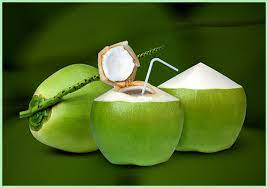
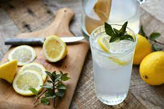
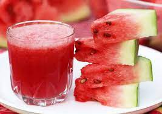

Healthier Alternatives



- Loved by health nuts and superstars, coconut water is definitely on the fad food list, dubbed nature’s sports drink for its natural electrolyte levels.
- While it still contains sugar, it contains far less than juice or soft drinks. Watch out for the flavoured varieties as they can contain loads of added sugar instead, infuse your own flavours with fresh fruit.
- Coconut water typically comes from young coconuts about 6–7 months of age, though it’s also found in mature fruit. An average green coconut provides about 1/2–1 cup of coconut water.
- Coconut water contains 94% water and very little fat. It should not be confused with coconut milk, which is made by adding water to grated coconut meat. Coconut milk contains about 50% water and is quite high in fat
- Lemons are a good source of vitamin C, which is an essential nutrient for immune function, collagen production, and antioxidant protection.
- Lemonade, when consumed as part of a balanced diet, can contribute to overall hydration. Staying properly hydrated is crucial for maintaining bodily functions and overall well-being.
- If you thought the slice of lemon in the tea above looked refreshing, think about how good a cold glass of fresh lemonade on a hot summer day tastes. Mix it with a dash of cane sugar or agave nectar for a hint of natural sweetness, and you won’t miss the sugar rush of a can of soda.
- Lemons are also a great source of vitamin C, the benefits of which “may include protection against immune system deficiencies, cardiovascular disease, prenatal health problems, eye disease, and even skin wrinkling,” .
- It's high in vitamin A, vitamin C and potassium. It's about 92% water, so it's plenty hydrating, too (nutrition source). I thought my juice was perfectly sweet without any added sugar, but I added a squeeze of lime juice for that extra zing.
- Watermelon contains antioxidants such as lycopene, which gives it its vibrant red color. Lycopene has been associated with various health benefits, including reduced risk of certain cancers and heart disease.
- Watermelon juice contains electrolytes like potassium, which can help maintain proper fluid balance in the body and support muscle function.
- Watermelon juice is known for its cooling and refreshing properties, making it a popular choice during hot weather or as a thirst-quencher.
- Watermelon juice is considered a natural diuretic and can help promote healthy digestion and prevent constipation due to its high water and fiber content.